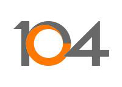

活動贊助
感謝以下贊助商對於社群及本活動的贊助與支持
白金級贊助

台灣微軟股份有限公司 Microsoft Taiwan
微軟一直專注於技術創新與變革，透過卓越的軟體、設備和服務，能夠幫助用戶提昇生活和工作生產力，讓數億的使用者真正受益於科技。最耳熟的就是，Satya Nadella 在上任後提出了新願景：「在這個行動優先、雲端至上的世界裡，微軟的核心競爭力，就是成為一個提供生產力與平台的公司，幫助在這個地球上的每一個人到每一個組織，都能貢獻更多、成就更大。」
更多資訊：https://www.microsoft.com/zh-tw
金級贊助
（依公司名稱筆畫排序）

104 資訊科技
104 資訊科技正致力於 IT 服務的轉型，提供持續、可靠、安全以及快速反應的服務。
基礎架構轉型從 on-premise 的 Openstack 私有雲到使用 AWS 公有雲服務的混合雲架構。
IT 技術轉型 DevOps，導入 CI/CD pipeline，IaC 部署，在傳統與創新思維的激盪中，向新技術邁進，維持著業界領先地位。
悠夏爾科技
FBbuy 是一個社群電商平台，賣家可以在此平台開店，在幾分鐘內就可以擁有一個自己的賣場以及完整的後台，買家則在 Facebook 社團以留言 +1 方式下單。我們有開放、學習、對事不對人的公司文化。技術團隊多年來贊助、參與 COSCUP, Laravel Conf, g0v 等開源活動，也在不少技術社群擔任講者，持續深耕 NodeJS 及 PHP 開源社群，未來將招募 SRE 團隊讓服務品質更上一層樓。
更多資訊：悠夏爾科技
迎棧科技 inwinSTACK
「迎棧科技─inwinSTACK」秉持開放 (Open)、分享 (Share) 及正向 (Positive) 的經營理念，為亞太區開源雲軟體的 IT 解決方案領導廠商。我們專注於提供企業級諮詢服務、教育訓練、laaS 整合、建置及維運，以確保客戶能成功的數位轉型，並在這資訊快速變動的創新科技環境中能持續保持領先地位。
inwinSTACK 藉由技術研發、參與及舉辦活動來持續投入各種開源雲端相關計畫。我們攜手全球各大 IT 企業和服務商共同為開源技術組織的核心成員，包括 Linux Foundation、Cloud Native Computing Foundation 以及 OpenStack Foundation。
更多資訊：https://www.inwinstack.com/
神秘贊助商
近期公佈！